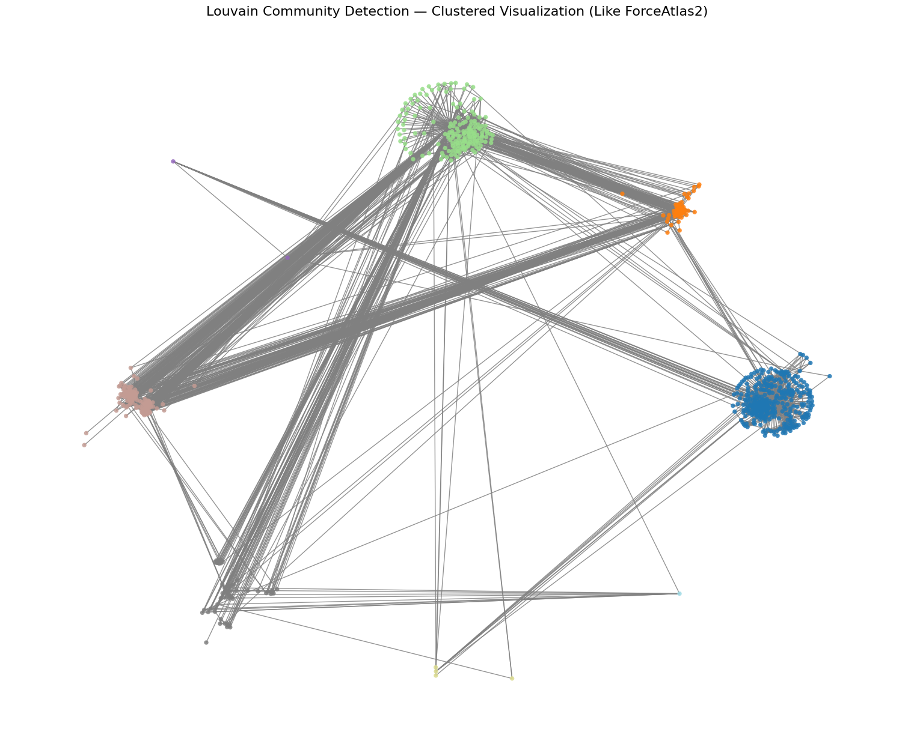
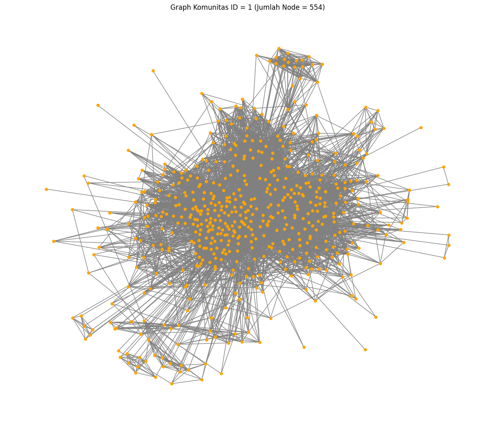

<!DOCTYPE html>


<html lang="en" data-content_root="" >

  <head>
    <meta charset="utf-8" />
    <meta name="viewport" content="width=device-width, initial-scale=1.0" /><meta name="generator" content="Docutils 0.18.1: http://docutils.sourceforge.net/" />

    <title>DETEKSI KOMUNITAS FB &#8212; My sample book</title>
  
  
  
  <script data-cfasync="false">
    document.documentElement.dataset.mode = localStorage.getItem("mode") || "";
    document.documentElement.dataset.theme = localStorage.getItem("theme") || "";
  </script>
  
  <!-- Loaded before other Sphinx assets -->
  <link href="_static/styles/theme.css?digest=dfe6caa3a7d634c4db9b" rel="stylesheet" />
<link href="_static/styles/bootstrap.css?digest=dfe6caa3a7d634c4db9b" rel="stylesheet" />
<link href="_static/styles/pydata-sphinx-theme.css?digest=dfe6caa3a7d634c4db9b" rel="stylesheet" />

  
  <link href="_static/vendor/fontawesome/6.5.2/css/all.min.css?digest=dfe6caa3a7d634c4db9b" rel="stylesheet" />
  <link rel="preload" as="font" type="font/woff2" crossorigin href="_static/vendor/fontawesome/6.5.2/webfonts/fa-solid-900.woff2" />
<link rel="preload" as="font" type="font/woff2" crossorigin href="_static/vendor/fontawesome/6.5.2/webfonts/fa-brands-400.woff2" />
<link rel="preload" as="font" type="font/woff2" crossorigin href="_static/vendor/fontawesome/6.5.2/webfonts/fa-regular-400.woff2" />

    <link rel="stylesheet" type="text/css" href="_static/pygments.css" />
    <link rel="stylesheet" href="_static/styles/sphinx-book-theme.css?digest=14f4ca6b54d191a8c7657f6c759bf11a5fb86285" type="text/css" />
    <link rel="stylesheet" type="text/css" href="_static/togglebutton.css" />
    <link rel="stylesheet" type="text/css" href="_static/copybutton.css" />
    <link rel="stylesheet" type="text/css" href="_static/mystnb.4510f1fc1dee50b3e5859aac5469c37c29e427902b24a333a5f9fcb2f0b3ac41.css" />
    <link rel="stylesheet" type="text/css" href="_static/sphinx-thebe.css" />
    <link rel="stylesheet" type="text/css" href="_static/design-style.4045f2051d55cab465a707391d5b2007.min.css" />
  
  <!-- Pre-loaded scripts that we'll load fully later -->
  <link rel="preload" as="script" href="_static/scripts/bootstrap.js?digest=dfe6caa3a7d634c4db9b" />
<link rel="preload" as="script" href="_static/scripts/pydata-sphinx-theme.js?digest=dfe6caa3a7d634c4db9b" />
  <script src="_static/vendor/fontawesome/6.5.2/js/all.min.js?digest=dfe6caa3a7d634c4db9b"></script>

    <script data-url_root="./" id="documentation_options" src="_static/documentation_options.js"></script>
    <script src="_static/jquery.js"></script>
    <script src="_static/underscore.js"></script>
    <script src="_static/_sphinx_javascript_frameworks_compat.js"></script>
    <script src="_static/doctools.js"></script>
    <script src="_static/clipboard.min.js"></script>
    <script src="_static/copybutton.js"></script>
    <script src="_static/scripts/sphinx-book-theme.js?digest=5a5c038af52cf7bc1a1ec88eea08e6366ee68824"></script>
    <script>let toggleHintShow = 'Click to show';</script>
    <script>let toggleHintHide = 'Click to hide';</script>
    <script>let toggleOpenOnPrint = 'true';</script>
    <script src="_static/togglebutton.js"></script>
    <script>var togglebuttonSelector = '.toggle, .admonition.dropdown';</script>
    <script src="_static/design-tabs.js"></script>
    <script>const THEBE_JS_URL = "https://unpkg.com/thebe@0.8.2/lib/index.js"
const thebe_selector = ".thebe,.cell"
const thebe_selector_input = "pre"
const thebe_selector_output = ".output, .cell_output"
</script>
    <script async="async" src="_static/sphinx-thebe.js"></script>
    <script>DOCUMENTATION_OPTIONS.pagename = 'DataFBPPW';</script>
    <link rel="index" title="Index" href="genindex.html" />
    <link rel="search" title="Search" href="search.html" />
    <link rel="prev" title="Web Usage" href="webusageNASA.html" />
  <meta name="viewport" content="width=device-width, initial-scale=1"/>
  <meta name="docsearch:language" content="en"/>
  </head>
  
  
  <body data-bs-spy="scroll" data-bs-target=".bd-toc-nav" data-offset="180" data-bs-root-margin="0px 0px -60%" data-default-mode="">

  
  
  <div id="pst-skip-link" class="skip-link d-print-none"><a href="#main-content">Skip to main content</a></div>
  
  <div id="pst-scroll-pixel-helper"></div>
  
  <button type="button" class="btn rounded-pill" id="pst-back-to-top">
    <i class="fa-solid fa-arrow-up"></i>Back to top</button>

  
  <input type="checkbox"
          class="sidebar-toggle"
          id="pst-primary-sidebar-checkbox"/>
  <label class="overlay overlay-primary" for="pst-primary-sidebar-checkbox"></label>
  
  <input type="checkbox"
          class="sidebar-toggle"
          id="pst-secondary-sidebar-checkbox"/>
  <label class="overlay overlay-secondary" for="pst-secondary-sidebar-checkbox"></label>
  
  <div class="search-button__wrapper">
    <div class="search-button__overlay"></div>
    <div class="search-button__search-container">
<form class="bd-search d-flex align-items-center"
      action="search.html"
      method="get">
  <i class="fa-solid fa-magnifying-glass"></i>
  <input type="search"
         class="form-control"
         name="q"
         id="search-input"
         placeholder="Search this book..."
         aria-label="Search this book..."
         autocomplete="off"
         autocorrect="off"
         autocapitalize="off"
         spellcheck="false"/>
  <span class="search-button__kbd-shortcut"><kbd class="kbd-shortcut__modifier">Ctrl</kbd>+<kbd>K</kbd></span>
</form></div>
  </div>

  <div class="pst-async-banner-revealer d-none">
  <aside id="bd-header-version-warning" class="d-none d-print-none" aria-label="Version warning"></aside>
</div>

  
    <header class="bd-header navbar navbar-expand-lg bd-navbar d-print-none">
    </header>
  

  <div class="bd-container">
    <div class="bd-container__inner bd-page-width">
      
      
      
      <div class="bd-sidebar-primary bd-sidebar">
        

  
  <div class="sidebar-header-items sidebar-primary__section">
    
    
    
    
  </div>
  
    <div class="sidebar-primary-items__start sidebar-primary__section">
        <div class="sidebar-primary-item">

  
    
  

<a class="navbar-brand logo" href="intro.html">
  
  
  
  
  
    
    
      
    
    
    
    <script>document.write(``);</script>
  
  
</a></div>
        <div class="sidebar-primary-item"><nav class="bd-links" id="bd-docs-nav" aria-label="Main">
    <div class="bd-toc-item navbar-nav active">
        
        <ul class="nav bd-sidenav bd-sidenav__home-link">
            <li class="toctree-l1">
                <a class="reference internal" href="intro.html">
                    Profile
                </a>
            </li>
        </ul>
        <ul class="current nav bd-sidenav">
<li class="toctree-l1"><a class="reference internal" href="PengantarWebMining.html">Pengantar Web Mining</a></li>
<li class="toctree-l1"><a class="reference internal" href="crawlingPTA.html">Crawling PTA UTM</a></li>


<li class="toctree-l1"><a class="reference internal" href="crawling_beritarevisi.html">Crawlling Berita</a></li>
<li class="toctree-l1"><a class="reference internal" href="CrawlingLink.html">Crawling Link</a></li>
<li class="toctree-l1"><a class="reference internal" href="Pemrosesan_Data_Berita_%26_PTA.html">Pemrosesan Data Berita &amp; PTA</a></li>

<li class="toctree-l1"><a class="reference internal" href="tfidf.html">TF-IDF</a></li>
<li class="toctree-l1"><a class="reference internal" href="Topic%20Modelling%20LDA%20KlasifikasiSVM.html">Topic Modelling LDA Klasifikasi SVM</a></li>
<li class="toctree-l1"><a class="reference internal" href="UTS_PPW.html">UTS</a></li>
<li class="toctree-l1"><a class="reference internal" href="graph%26pagerank.html">Graph &amp; Page Rank</a></li>
<li class="toctree-l1"><a class="reference internal" href="webusageNASA.html">Web Usage</a></li>
<li class="toctree-l1 current active"><a class="current reference internal" href="#">DETEKSI KOMUNITAS FB</a></li>
</ul>

    </div>
</nav></div>
    </div>
  
  
  <div class="sidebar-primary-items__end sidebar-primary__section">
  </div>
  
  <div id="rtd-footer-container"></div>


      </div>
      
      <main id="main-content" class="bd-main" role="main">
        
        

<div class="sbt-scroll-pixel-helper"></div>

          <div class="bd-content">
            <div class="bd-article-container">
              
              <div class="bd-header-article d-print-none">
<div class="header-article-items header-article__inner">
  
    <div class="header-article-items__start">
      
        <div class="header-article-item"><label class="sidebar-toggle primary-toggle btn btn-sm" for="__primary" title="Toggle primary sidebar" data-bs-placement="bottom" data-bs-toggle="tooltip">
  <span class="fa-solid fa-bars"></span>
</label></div>
      
    </div>
  
  
    <div class="header-article-items__end">
      
        <div class="header-article-item">

<div class="article-header-buttons">


<div class="dropdown dropdown-source-buttons">
  <button class="btn dropdown-toggle" type="button" data-bs-toggle="dropdown" aria-expanded="false" aria-label="Source repositories">
    <i class="fab fa-github"></i>
  </button>
  <ul class="dropdown-menu">
      
      
      
      <li><a href="https://github.com/executablebooks/jupyter-book" target="_blank"
   class="btn btn-sm btn-source-repository-button dropdown-item"
   title="Source repository"
   data-bs-placement="left" data-bs-toggle="tooltip"
>
  

<span class="btn__icon-container">
  <i class="fab fa-github"></i>
  </span>
<span class="btn__text-container">Repository</span>
</a>
</li>
      
      
      
      
      <li><a href="https://github.com/executablebooks/jupyter-book/issues/new?title=Issue%20on%20page%20%2FDataFBPPW.html&body=Your%20issue%20content%20here." target="_blank"
   class="btn btn-sm btn-source-issues-button dropdown-item"
   title="Open an issue"
   data-bs-placement="left" data-bs-toggle="tooltip"
>
  

<span class="btn__icon-container">
  <i class="fas fa-lightbulb"></i>
  </span>
<span class="btn__text-container">Open issue</span>
</a>
</li>
      
  </ul>
</div>


<div class="dropdown dropdown-download-buttons">
  <button class="btn dropdown-toggle" type="button" data-bs-toggle="dropdown" aria-expanded="false" aria-label="Download this page">
    <i class="fas fa-download"></i>
  </button>
  <ul class="dropdown-menu">
      
      
      
      <li><a href="_sources/DataFBPPW.ipynb" target="_blank"
   class="btn btn-sm btn-download-source-button dropdown-item"
   title="Download source file"
   data-bs-placement="left" data-bs-toggle="tooltip"
>
  

<span class="btn__icon-container">
  <i class="fas fa-file"></i>
  </span>
<span class="btn__text-container">.ipynb</span>
</a>
</li>
      
      
      
      
      <li>
<button onclick="window.print()"
  class="btn btn-sm btn-download-pdf-button dropdown-item"
  title="Print to PDF"
  data-bs-placement="left" data-bs-toggle="tooltip"
>
  

<span class="btn__icon-container">
  <i class="fas fa-file-pdf"></i>
  </span>
<span class="btn__text-container">.pdf</span>
</button>
</li>
      
  </ul>
</div>


<button onclick="toggleFullScreen()"
  class="btn btn-sm btn-fullscreen-button"
  title="Fullscreen mode"
  data-bs-placement="bottom" data-bs-toggle="tooltip"
>
  

<span class="btn__icon-container">
  <i class="fas fa-expand"></i>
  </span>

</button>


<script>
document.write(`
  <button class="btn btn-sm nav-link pst-navbar-icon theme-switch-button" title="light/dark" aria-label="light/dark" data-bs-placement="bottom" data-bs-toggle="tooltip">
    <i class="theme-switch fa-solid fa-sun fa-lg" data-mode="light"></i>
    <i class="theme-switch fa-solid fa-moon fa-lg" data-mode="dark"></i>
    <i class="theme-switch fa-solid fa-circle-half-stroke fa-lg" data-mode="auto"></i>
  </button>
`);
</script>


<script>
document.write(`
  <button class="btn btn-sm pst-navbar-icon search-button search-button__button" title="Search" aria-label="Search" data-bs-placement="bottom" data-bs-toggle="tooltip">
    <i class="fa-solid fa-magnifying-glass fa-lg"></i>
  </button>
`);
</script>

</div></div>
      
    </div>
  
</div>
</div>
              
              

<div id="jb-print-docs-body" class="onlyprint">
    <h1>DETEKSI KOMUNITAS FB</h1>
    <!-- Table of contents -->
    <div id="print-main-content">
        <div id="jb-print-toc">
            
        </div>
    </div>
</div>

              
                
<div id="searchbox"></div>
                <article class="bd-article">
                  
  <section class="tex2jax_ignore mathjax_ignore" id="deteksi-komunitas-fb">
<h1>DETEKSI KOMUNITAS FB<a class="headerlink" href="#deteksi-komunitas-fb" title="Permalink to this heading">#</a></h1>
<div class="cell docutils container">
<div class="cell_input docutils container">
<div class="highlight-ipython3 notranslate"><div class="highlight"><pre><span></span><span class="o">!</span>pip<span class="w"> </span>install<span class="w"> </span>networkx<span class="w"> </span>matplotlib<span class="w"> </span>python-louvain
</pre></div>
</div>
</div>
<div class="cell_output docutils container">
<div class="output stream highlight-myst-ansi notranslate"><div class="highlight"><pre><span></span>Requirement already satisfied: networkx in /home/codespace/.local/lib/python3.12/site-packages (3.5)
Requirement already satisfied: matplotlib in /home/codespace/.local/lib/python3.12/site-packages (3.10.7)
</pre></div>
</div>
<div class="output stream highlight-myst-ansi notranslate"><div class="highlight"><pre><span></span>Collecting python-louvain
</pre></div>
</div>
<div class="output stream highlight-myst-ansi notranslate"><div class="highlight"><pre><span></span>  Downloading python-louvain-0.16.tar.gz (204 kB)
</pre></div>
</div>
<div class="output stream highlight-myst-ansi notranslate"><div class="highlight"><pre><span></span>  Installing build dependencies ... ?25l-
</pre></div>
</div>
<div class="output stream highlight-myst-ansi notranslate"><div class="highlight"><pre><span></span> \
</pre></div>
</div>
<div class="output stream highlight-myst-ansi notranslate"><div class="highlight"><pre><span></span> done
</pre></div>
</div>
<div class="output stream highlight-myst-ansi notranslate"><div class="highlight"><pre><span></span>?25h  Getting requirements to build wheel ... ?25l-
</pre></div>
</div>
<div class="output stream highlight-myst-ansi notranslate"><div class="highlight"><pre><span></span> done
</pre></div>
</div>
<div class="output stream highlight-myst-ansi notranslate"><div class="highlight"><pre><span></span>?25h  Preparing metadata (pyproject.toml) ... ?25l-
</pre></div>
</div>
<div class="output stream highlight-myst-ansi notranslate"><div class="highlight"><pre><span></span> done
?25hRequirement already satisfied: contourpy&gt;=1.0.1 in /home/codespace/.local/lib/python3.12/site-packages (from matplotlib) (1.3.3)
Requirement already satisfied: cycler&gt;=0.10 in /home/codespace/.local/lib/python3.12/site-packages (from matplotlib) (0.12.1)
Requirement already satisfied: fonttools&gt;=4.22.0 in /home/codespace/.local/lib/python3.12/site-packages (from matplotlib) (4.60.1)
Requirement already satisfied: kiwisolver&gt;=1.3.1 in /home/codespace/.local/lib/python3.12/site-packages (from matplotlib) (1.4.9)
Requirement already satisfied: numpy&gt;=1.23 in /home/codespace/.local/lib/python3.12/site-packages (from matplotlib) (2.3.4)
Requirement already satisfied: packaging&gt;=20.0 in /home/codespace/.local/lib/python3.12/site-packages (from matplotlib) (25.0)
Requirement already satisfied: pillow&gt;=8 in /home/codespace/.local/lib/python3.12/site-packages (from matplotlib) (12.0.0)
Requirement already satisfied: pyparsing&gt;=3 in /home/codespace/.local/lib/python3.12/site-packages (from matplotlib) (3.2.5)
Requirement already satisfied: python-dateutil&gt;=2.7 in /home/codespace/.local/lib/python3.12/site-packages (from matplotlib) (2.9.0.post0)
Requirement already satisfied: six&gt;=1.5 in /home/codespace/.local/lib/python3.12/site-packages (from python-dateutil&gt;=2.7-&gt;matplotlib) (1.17.0)
Building wheels for collected packages: python-louvain
</pre></div>
</div>
<div class="output stream highlight-myst-ansi notranslate"><div class="highlight"><pre><span></span>  Building wheel for python-louvain (pyproject.toml) ... ?25l-
</pre></div>
</div>
<div class="output stream highlight-myst-ansi notranslate"><div class="highlight"><pre><span></span> done
?25h  Created wheel for python-louvain: filename=python_louvain-0.16-py3-none-any.whl size=9460 sha256=b7437dba52b20e6868a2743c0e951586ad8dc10b1c1319f4b216b1d84ca3f1f6
  Stored in directory: /home/codespace/.cache/pip/wheels/40/f1/e3/485b698c520fa0baee1d07897abc7b8d6479b7d199ce96f4af
Successfully built python-louvain
</pre></div>
</div>
<div class="output stream highlight-myst-ansi notranslate"><div class="highlight"><pre><span></span>Installing collected packages: python-louvain
Successfully installed python-louvain-0.16
</pre></div>
</div>
</div>
</div>
<div class="cell docutils container">
<div class="cell_input docutils container">
<div class="highlight-ipython3 notranslate"><div class="highlight"><pre><span></span><span class="kn">import</span><span class="w"> </span><span class="nn">networkx</span><span class="w"> </span><span class="k">as</span><span class="w"> </span><span class="nn">nx</span>
<span class="kn">import</span><span class="w"> </span><span class="nn">matplotlib.pyplot</span><span class="w"> </span><span class="k">as</span><span class="w"> </span><span class="nn">plt</span>
<span class="kn">import</span><span class="w"> </span><span class="nn">pandas</span><span class="w"> </span><span class="k">as</span><span class="w"> </span><span class="nn">pd</span>
<span class="kn">from</span><span class="w"> </span><span class="nn">community</span><span class="w"> </span><span class="kn">import</span> <span class="n">community_louvain</span>
</pre></div>
</div>
</div>
</div>
<div class="cell docutils container">
<div class="cell_input docutils container">
<div class="highlight-ipython3 notranslate"><div class="highlight"><pre><span></span><span class="c1"># Load dataset</span>
<span class="n">file_path</span> <span class="o">=</span> <span class="s2">&quot;/content/facebook_combined.txt&quot;</span>   <span class="c1"># sesuaikan lokasi upload</span>
<span class="n">edges</span> <span class="o">=</span> <span class="n">pd</span><span class="o">.</span><span class="n">read_csv</span><span class="p">(</span><span class="n">file_path</span><span class="p">,</span> <span class="n">sep</span><span class="o">=</span><span class="s2">&quot; &quot;</span><span class="p">,</span> <span class="n">header</span><span class="o">=</span><span class="kc">None</span><span class="p">,</span> <span class="n">names</span><span class="o">=</span><span class="p">[</span><span class="s2">&quot;source&quot;</span><span class="p">,</span> <span class="s2">&quot;target&quot;</span><span class="p">])</span>

<span class="n">edges</span><span class="o">.</span><span class="n">head</span><span class="p">()</span>
</pre></div>
</div>
</div>
<div class="cell_output docutils container">
<div class="output traceback highlight-ipythontb notranslate"><div class="highlight"><pre><span></span><span class="gt">---------------------------------------------------------------------------</span>
<span class="ne">FileNotFoundError</span><span class="g g-Whitespace">                         </span>Traceback (most recent call last)
<span class="n">Cell</span> <span class="n">In</span><span class="p">[</span><span class="mi">3</span><span class="p">],</span> <span class="n">line</span> <span class="mi">3</span>
<span class="g g-Whitespace">      </span><span class="mi">1</span> <span class="c1"># Load dataset</span>
<span class="g g-Whitespace">      </span><span class="mi">2</span> <span class="n">file_path</span> <span class="o">=</span> <span class="s2">&quot;/content/facebook_combined.txt&quot;</span>   <span class="c1"># sesuaikan lokasi upload</span>
<span class="ne">----&gt; </span><span class="mi">3</span> <span class="n">edges</span> <span class="o">=</span> <span class="n">pd</span><span class="o">.</span><span class="n">read_csv</span><span class="p">(</span><span class="n">file_path</span><span class="p">,</span> <span class="n">sep</span><span class="o">=</span><span class="s2">&quot; &quot;</span><span class="p">,</span> <span class="n">header</span><span class="o">=</span><span class="kc">None</span><span class="p">,</span> <span class="n">names</span><span class="o">=</span><span class="p">[</span><span class="s2">&quot;source&quot;</span><span class="p">,</span> <span class="s2">&quot;target&quot;</span><span class="p">])</span>
<span class="g g-Whitespace">      </span><span class="mi">5</span> <span class="n">edges</span><span class="o">.</span><span class="n">head</span><span class="p">()</span>

<span class="nn">File ~/.local/lib/python3.12/site-packages/pandas/io/parsers/readers.py:1026,</span> in <span class="ni">read_csv</span><span class="nt">(filepath_or_buffer, sep, delimiter, header, names, index_col, usecols, dtype, engine, converters, true_values, false_values, skipinitialspace, skiprows, skipfooter, nrows, na_values, keep_default_na, na_filter, verbose, skip_blank_lines, parse_dates, infer_datetime_format, keep_date_col, date_parser, date_format, dayfirst, cache_dates, iterator, chunksize, compression, thousands, decimal, lineterminator, quotechar, quoting, doublequote, escapechar, comment, encoding, encoding_errors, dialect, on_bad_lines, delim_whitespace, low_memory, memory_map, float_precision, storage_options, dtype_backend)</span>
<span class="g g-Whitespace">   </span><span class="mi">1013</span> <span class="n">kwds_defaults</span> <span class="o">=</span> <span class="n">_refine_defaults_read</span><span class="p">(</span>
<span class="g g-Whitespace">   </span><span class="mi">1014</span>     <span class="n">dialect</span><span class="p">,</span>
<span class="g g-Whitespace">   </span><span class="mi">1015</span>     <span class="n">delimiter</span><span class="p">,</span>
   <span class="p">(</span><span class="o">...</span><span class="p">)</span>   <span class="mi">1022</span>     <span class="n">dtype_backend</span><span class="o">=</span><span class="n">dtype_backend</span><span class="p">,</span>
<span class="g g-Whitespace">   </span><span class="mi">1023</span> <span class="p">)</span>
<span class="g g-Whitespace">   </span><span class="mi">1024</span> <span class="n">kwds</span><span class="o">.</span><span class="n">update</span><span class="p">(</span><span class="n">kwds_defaults</span><span class="p">)</span>
<span class="ne">-&gt; </span><span class="mi">1026</span> <span class="k">return</span> <span class="n">_read</span><span class="p">(</span><span class="n">filepath_or_buffer</span><span class="p">,</span> <span class="n">kwds</span><span class="p">)</span>

<span class="nn">File ~/.local/lib/python3.12/site-packages/pandas/io/parsers/readers.py:620,</span> in <span class="ni">_read</span><span class="nt">(filepath_or_buffer, kwds)</span>
<span class="g g-Whitespace">    </span><span class="mi">617</span> <span class="n">_validate_names</span><span class="p">(</span><span class="n">kwds</span><span class="o">.</span><span class="n">get</span><span class="p">(</span><span class="s2">&quot;names&quot;</span><span class="p">,</span> <span class="kc">None</span><span class="p">))</span>
<span class="g g-Whitespace">    </span><span class="mi">619</span> <span class="c1"># Create the parser.</span>
<span class="ne">--&gt; </span><span class="mi">620</span> <span class="n">parser</span> <span class="o">=</span> <span class="n">TextFileReader</span><span class="p">(</span><span class="n">filepath_or_buffer</span><span class="p">,</span> <span class="o">**</span><span class="n">kwds</span><span class="p">)</span>
<span class="g g-Whitespace">    </span><span class="mi">622</span> <span class="k">if</span> <span class="n">chunksize</span> <span class="ow">or</span> <span class="n">iterator</span><span class="p">:</span>
<span class="g g-Whitespace">    </span><span class="mi">623</span>     <span class="k">return</span> <span class="n">parser</span>

<span class="nn">File ~/.local/lib/python3.12/site-packages/pandas/io/parsers/readers.py:1620,</span> in <span class="ni">TextFileReader.__init__</span><span class="nt">(self, f, engine, **kwds)</span>
<span class="g g-Whitespace">   </span><span class="mi">1617</span>     <span class="bp">self</span><span class="o">.</span><span class="n">options</span><span class="p">[</span><span class="s2">&quot;has_index_names&quot;</span><span class="p">]</span> <span class="o">=</span> <span class="n">kwds</span><span class="p">[</span><span class="s2">&quot;has_index_names&quot;</span><span class="p">]</span>
<span class="g g-Whitespace">   </span><span class="mi">1619</span> <span class="bp">self</span><span class="o">.</span><span class="n">handles</span><span class="p">:</span> <span class="n">IOHandles</span> <span class="o">|</span> <span class="kc">None</span> <span class="o">=</span> <span class="kc">None</span>
<span class="ne">-&gt; </span><span class="mi">1620</span> <span class="bp">self</span><span class="o">.</span><span class="n">_engine</span> <span class="o">=</span> <span class="bp">self</span><span class="o">.</span><span class="n">_make_engine</span><span class="p">(</span><span class="n">f</span><span class="p">,</span> <span class="bp">self</span><span class="o">.</span><span class="n">engine</span><span class="p">)</span>

<span class="nn">File ~/.local/lib/python3.12/site-packages/pandas/io/parsers/readers.py:1880,</span> in <span class="ni">TextFileReader._make_engine</span><span class="nt">(self, f, engine)</span>
<span class="g g-Whitespace">   </span><span class="mi">1878</span>     <span class="k">if</span> <span class="s2">&quot;b&quot;</span> <span class="ow">not</span> <span class="ow">in</span> <span class="n">mode</span><span class="p">:</span>
<span class="g g-Whitespace">   </span><span class="mi">1879</span>         <span class="n">mode</span> <span class="o">+=</span> <span class="s2">&quot;b&quot;</span>
<span class="ne">-&gt; </span><span class="mi">1880</span> <span class="bp">self</span><span class="o">.</span><span class="n">handles</span> <span class="o">=</span> <span class="n">get_handle</span><span class="p">(</span>
<span class="g g-Whitespace">   </span><span class="mi">1881</span>     <span class="n">f</span><span class="p">,</span>
<span class="g g-Whitespace">   </span><span class="mi">1882</span>     <span class="n">mode</span><span class="p">,</span>
<span class="g g-Whitespace">   </span><span class="mi">1883</span>     <span class="n">encoding</span><span class="o">=</span><span class="bp">self</span><span class="o">.</span><span class="n">options</span><span class="o">.</span><span class="n">get</span><span class="p">(</span><span class="s2">&quot;encoding&quot;</span><span class="p">,</span> <span class="kc">None</span><span class="p">),</span>
<span class="g g-Whitespace">   </span><span class="mi">1884</span>     <span class="n">compression</span><span class="o">=</span><span class="bp">self</span><span class="o">.</span><span class="n">options</span><span class="o">.</span><span class="n">get</span><span class="p">(</span><span class="s2">&quot;compression&quot;</span><span class="p">,</span> <span class="kc">None</span><span class="p">),</span>
<span class="g g-Whitespace">   </span><span class="mi">1885</span>     <span class="n">memory_map</span><span class="o">=</span><span class="bp">self</span><span class="o">.</span><span class="n">options</span><span class="o">.</span><span class="n">get</span><span class="p">(</span><span class="s2">&quot;memory_map&quot;</span><span class="p">,</span> <span class="kc">False</span><span class="p">),</span>
<span class="g g-Whitespace">   </span><span class="mi">1886</span>     <span class="n">is_text</span><span class="o">=</span><span class="n">is_text</span><span class="p">,</span>
<span class="g g-Whitespace">   </span><span class="mi">1887</span>     <span class="n">errors</span><span class="o">=</span><span class="bp">self</span><span class="o">.</span><span class="n">options</span><span class="o">.</span><span class="n">get</span><span class="p">(</span><span class="s2">&quot;encoding_errors&quot;</span><span class="p">,</span> <span class="s2">&quot;strict&quot;</span><span class="p">),</span>
<span class="g g-Whitespace">   </span><span class="mi">1888</span>     <span class="n">storage_options</span><span class="o">=</span><span class="bp">self</span><span class="o">.</span><span class="n">options</span><span class="o">.</span><span class="n">get</span><span class="p">(</span><span class="s2">&quot;storage_options&quot;</span><span class="p">,</span> <span class="kc">None</span><span class="p">),</span>
<span class="g g-Whitespace">   </span><span class="mi">1889</span> <span class="p">)</span>
<span class="g g-Whitespace">   </span><span class="mi">1890</span> <span class="k">assert</span> <span class="bp">self</span><span class="o">.</span><span class="n">handles</span> <span class="ow">is</span> <span class="ow">not</span> <span class="kc">None</span>
<span class="g g-Whitespace">   </span><span class="mi">1891</span> <span class="n">f</span> <span class="o">=</span> <span class="bp">self</span><span class="o">.</span><span class="n">handles</span><span class="o">.</span><span class="n">handle</span>

<span class="nn">File ~/.local/lib/python3.12/site-packages/pandas/io/common.py:873,</span> in <span class="ni">get_handle</span><span class="nt">(path_or_buf, mode, encoding, compression, memory_map, is_text, errors, storage_options)</span>
<span class="g g-Whitespace">    </span><span class="mi">868</span> <span class="k">elif</span> <span class="nb">isinstance</span><span class="p">(</span><span class="n">handle</span><span class="p">,</span> <span class="nb">str</span><span class="p">):</span>
<span class="g g-Whitespace">    </span><span class="mi">869</span>     <span class="c1"># Check whether the filename is to be opened in binary mode.</span>
<span class="g g-Whitespace">    </span><span class="mi">870</span>     <span class="c1"># Binary mode does not support &#39;encoding&#39; and &#39;newline&#39;.</span>
<span class="g g-Whitespace">    </span><span class="mi">871</span>     <span class="k">if</span> <span class="n">ioargs</span><span class="o">.</span><span class="n">encoding</span> <span class="ow">and</span> <span class="s2">&quot;b&quot;</span> <span class="ow">not</span> <span class="ow">in</span> <span class="n">ioargs</span><span class="o">.</span><span class="n">mode</span><span class="p">:</span>
<span class="g g-Whitespace">    </span><span class="mi">872</span>         <span class="c1"># Encoding</span>
<span class="ne">--&gt; </span><span class="mi">873</span>         <span class="n">handle</span> <span class="o">=</span> <span class="nb">open</span><span class="p">(</span>
<span class="g g-Whitespace">    </span><span class="mi">874</span>             <span class="n">handle</span><span class="p">,</span>
<span class="g g-Whitespace">    </span><span class="mi">875</span>             <span class="n">ioargs</span><span class="o">.</span><span class="n">mode</span><span class="p">,</span>
<span class="g g-Whitespace">    </span><span class="mi">876</span>             <span class="n">encoding</span><span class="o">=</span><span class="n">ioargs</span><span class="o">.</span><span class="n">encoding</span><span class="p">,</span>
<span class="g g-Whitespace">    </span><span class="mi">877</span>             <span class="n">errors</span><span class="o">=</span><span class="n">errors</span><span class="p">,</span>
<span class="g g-Whitespace">    </span><span class="mi">878</span>             <span class="n">newline</span><span class="o">=</span><span class="s2">&quot;&quot;</span><span class="p">,</span>
<span class="g g-Whitespace">    </span><span class="mi">879</span>         <span class="p">)</span>
<span class="g g-Whitespace">    </span><span class="mi">880</span>     <span class="k">else</span><span class="p">:</span>
<span class="g g-Whitespace">    </span><span class="mi">881</span>         <span class="c1"># Binary mode</span>
<span class="g g-Whitespace">    </span><span class="mi">882</span>         <span class="n">handle</span> <span class="o">=</span> <span class="nb">open</span><span class="p">(</span><span class="n">handle</span><span class="p">,</span> <span class="n">ioargs</span><span class="o">.</span><span class="n">mode</span><span class="p">)</span>

<span class="ne">FileNotFoundError</span>: [Errno 2] No such file or directory: &#39;/content/facebook_combined.txt&#39;
</pre></div>
</div>
</div>
</div>
<div class="cell docutils container">
<div class="cell_input docutils container">
<div class="highlight-ipython3 notranslate"><div class="highlight"><pre><span></span><span class="n">G</span> <span class="o">=</span> <span class="n">nx</span><span class="o">.</span><span class="n">from_pandas_edgelist</span><span class="p">(</span><span class="n">edges</span><span class="p">,</span> <span class="s2">&quot;source&quot;</span><span class="p">,</span> <span class="s2">&quot;target&quot;</span><span class="p">)</span>
<span class="nb">print</span><span class="p">(</span><span class="s2">&quot;Jumlah node:&quot;</span><span class="p">,</span> <span class="n">G</span><span class="o">.</span><span class="n">number_of_nodes</span><span class="p">())</span>
<span class="nb">print</span><span class="p">(</span><span class="s2">&quot;Jumlah edge:&quot;</span><span class="p">,</span> <span class="n">G</span><span class="o">.</span><span class="n">number_of_edges</span><span class="p">())</span>
</pre></div>
</div>
</div>
<div class="cell_output docutils container">
<div class="output stream highlight-myst-ansi notranslate"><div class="highlight"><pre><span></span>Jumlah node: 4039
Jumlah edge: 88234
</pre></div>
</div>
</div>
</div>
<div class="cell docutils container">
<div class="cell_input docutils container">
<div class="highlight-ipython3 notranslate"><div class="highlight"><pre><span></span><span class="c1"># Langkah 1: Jalankan Louvain</span>
<span class="n">partition_raw</span> <span class="o">=</span> <span class="n">community_louvain</span><span class="o">.</span><span class="n">best_partition</span><span class="p">(</span><span class="n">G</span><span class="p">)</span>

<span class="c1"># Konversi ke dataframe komunitas</span>
<span class="n">df_com</span> <span class="o">=</span> <span class="n">pd</span><span class="o">.</span><span class="n">DataFrame</span><span class="p">({</span>
    <span class="s2">&quot;node&quot;</span><span class="p">:</span> <span class="nb">list</span><span class="p">(</span><span class="n">partition_raw</span><span class="o">.</span><span class="n">keys</span><span class="p">()),</span>
    <span class="s2">&quot;community&quot;</span><span class="p">:</span> <span class="nb">list</span><span class="p">(</span><span class="n">partition_raw</span><span class="o">.</span><span class="n">values</span><span class="p">())</span>
<span class="p">})</span>

<span class="c1"># Group komunitas</span>
<span class="n">groups</span> <span class="o">=</span> <span class="n">df_com</span><span class="o">.</span><span class="n">groupby</span><span class="p">(</span><span class="s2">&quot;community&quot;</span><span class="p">)[</span><span class="s2">&quot;node&quot;</span><span class="p">]</span><span class="o">.</span><span class="n">apply</span><span class="p">(</span><span class="nb">list</span><span class="p">)</span>

<span class="c1"># Urutkan berdasarkan ukuran (besar -&gt; kecil)</span>
<span class="n">groups_sorted</span> <span class="o">=</span> <span class="n">groups</span><span class="o">.</span><span class="n">sort_values</span><span class="p">(</span><span class="n">key</span><span class="o">=</span><span class="k">lambda</span> <span class="n">x</span><span class="p">:</span> <span class="n">x</span><span class="o">.</span><span class="n">str</span><span class="o">.</span><span class="n">len</span><span class="p">(),</span> <span class="n">ascending</span><span class="o">=</span><span class="kc">False</span><span class="p">)</span>

<span class="c1"># Tentukan 13 komunitas utama</span>
<span class="n">main_coms</span> <span class="o">=</span> <span class="n">groups_sorted</span><span class="p">[:</span><span class="mi">13</span><span class="p">]</span>

<span class="c1"># Komunitas lain (kecil) akan digabung</span>
<span class="n">other_coms</span> <span class="o">=</span> <span class="n">groups_sorted</span><span class="p">[</span><span class="mi">13</span><span class="p">:]</span>

<span class="nb">print</span><span class="p">(</span><span class="s2">&quot;Komunitas awal Louvain :&quot;</span><span class="p">,</span> <span class="nb">len</span><span class="p">(</span><span class="n">groups_sorted</span><span class="p">))</span>
<span class="nb">print</span><span class="p">(</span><span class="s2">&quot;Komunitas target       : 13&quot;</span><span class="p">)</span>
<span class="nb">print</span><span class="p">(</span><span class="s2">&quot;Komunitas kecil        :&quot;</span><span class="p">,</span> <span class="nb">len</span><span class="p">(</span><span class="n">other_coms</span><span class="p">))</span>
</pre></div>
</div>
</div>
<div class="cell_output docutils container">
<div class="output stream highlight-myst-ansi notranslate"><div class="highlight"><pre><span></span>Komunitas awal Louvain : 16
Komunitas target       : 13
Komunitas kecil        : 3
</pre></div>
</div>
</div>
</div>
<div class="cell docutils container">
<div class="cell_input docutils container">
<div class="highlight-ipython3 notranslate"><div class="highlight"><pre><span></span><span class="c1"># Mapping baru: node -&gt; komunitas_final (0..12)</span>
<span class="n">final_partition</span> <span class="o">=</span> <span class="p">{}</span>

<span class="c1"># Assign 13 komunitas besar</span>
<span class="k">for</span> <span class="n">new_id</span><span class="p">,</span> <span class="p">(</span><span class="n">c_id</span><span class="p">,</span> <span class="n">nodes</span><span class="p">)</span> <span class="ow">in</span> <span class="nb">enumerate</span><span class="p">(</span><span class="n">main_coms</span><span class="o">.</span><span class="n">items</span><span class="p">()):</span>
    <span class="k">for</span> <span class="n">n</span> <span class="ow">in</span> <span class="n">nodes</span><span class="p">:</span>
        <span class="n">final_partition</span><span class="p">[</span><span class="n">n</span><span class="p">]</span> <span class="o">=</span> <span class="n">new_id</span>

<span class="c1"># Komunitas kecil digabung ke komunitas besar terdekat</span>
<span class="k">for</span> <span class="n">c_id</span><span class="p">,</span> <span class="n">nodes</span> <span class="ow">in</span> <span class="n">other_coms</span><span class="o">.</span><span class="n">items</span><span class="p">():</span>

    <span class="k">for</span> <span class="n">n</span> <span class="ow">in</span> <span class="n">nodes</span><span class="p">:</span>
        <span class="c1"># Cari komunitas besar yang paling banyak terhubung</span>
        <span class="n">neighbors</span> <span class="o">=</span> <span class="nb">list</span><span class="p">(</span><span class="n">G</span><span class="o">.</span><span class="n">neighbors</span><span class="p">(</span><span class="n">n</span><span class="p">))</span>

        <span class="c1"># Hitung koneksi ke setiap komunitas besar</span>
        <span class="n">count_per_com</span> <span class="o">=</span> <span class="p">{</span><span class="n">kid</span><span class="p">:</span> <span class="mi">0</span> <span class="k">for</span> <span class="n">kid</span> <span class="ow">in</span> <span class="nb">range</span><span class="p">(</span><span class="mi">13</span><span class="p">)}</span>
        <span class="k">for</span> <span class="n">nbr</span> <span class="ow">in</span> <span class="n">neighbors</span><span class="p">:</span>
            <span class="k">if</span> <span class="n">nbr</span> <span class="ow">in</span> <span class="n">final_partition</span><span class="p">:</span>
                <span class="n">count_per_com</span><span class="p">[</span><span class="n">final_partition</span><span class="p">[</span><span class="n">nbr</span><span class="p">]]</span> <span class="o">+=</span> <span class="mi">1</span>

        <span class="c1"># Pilih komunitas dengan tetangga terbanyak</span>
        <span class="n">best_com</span> <span class="o">=</span> <span class="nb">max</span><span class="p">(</span><span class="n">count_per_com</span><span class="p">,</span> <span class="n">key</span><span class="o">=</span><span class="n">count_per_com</span><span class="o">.</span><span class="n">get</span><span class="p">)</span>
        <span class="n">final_partition</span><span class="p">[</span><span class="n">n</span><span class="p">]</span> <span class="o">=</span> <span class="n">best_com</span>
</pre></div>
</div>
</div>
</div>
<div class="cell docutils container">
<div class="cell_input docutils container">
<div class="highlight-ipython3 notranslate"><div class="highlight"><pre><span></span><span class="n">community_df</span> <span class="o">=</span> <span class="p">(</span>
    <span class="n">pd</span><span class="o">.</span><span class="n">DataFrame</span><span class="p">({</span><span class="s2">&quot;node&quot;</span><span class="p">:</span> <span class="nb">list</span><span class="p">(</span><span class="n">final_partition</span><span class="o">.</span><span class="n">keys</span><span class="p">()),</span>
                  <span class="s2">&quot;community&quot;</span><span class="p">:</span> <span class="nb">list</span><span class="p">(</span><span class="n">final_partition</span><span class="o">.</span><span class="n">values</span><span class="p">())})</span>
    <span class="o">.</span><span class="n">groupby</span><span class="p">(</span><span class="s2">&quot;community&quot;</span><span class="p">)[</span><span class="s2">&quot;node&quot;</span><span class="p">]</span>
    <span class="o">.</span><span class="n">apply</span><span class="p">(</span><span class="nb">list</span><span class="p">)</span>
    <span class="o">.</span><span class="n">reset_index</span><span class="p">(</span><span class="n">name</span><span class="o">=</span><span class="s2">&quot;nodes&quot;</span><span class="p">)</span>
<span class="p">)</span>

<span class="n">community_df</span><span class="p">[</span><span class="s2">&quot;size&quot;</span><span class="p">]</span> <span class="o">=</span> <span class="n">community_df</span><span class="p">[</span><span class="s2">&quot;nodes&quot;</span><span class="p">]</span><span class="o">.</span><span class="n">apply</span><span class="p">(</span><span class="nb">len</span><span class="p">)</span>

<span class="c1"># Urutkan berdasarkan ukuran</span>
<span class="n">community_df</span> <span class="o">=</span> <span class="n">community_df</span><span class="o">.</span><span class="n">sort_values</span><span class="p">(</span><span class="n">by</span><span class="o">=</span><span class="s2">&quot;size&quot;</span><span class="p">,</span> <span class="n">ascending</span><span class="o">=</span><span class="kc">False</span><span class="p">)</span>

<span class="n">community_df</span>
</pre></div>
</div>
</div>
<div class="cell_output docutils container">
<div class="output text_html">
  <div id="df-426c0089-e75f-4446-be59-0e95bf97541d" class="colab-df-container">
    <div>
<style scoped>
    .dataframe tbody tr th:only-of-type {
        vertical-align: middle;
    }

    .dataframe tbody tr th {
        vertical-align: top;
    }

    .dataframe thead th {
        text-align: right;
    }
</style>
<table border="1" class="dataframe">
  <thead>
    <tr style="text-align: right;">
      <th></th>
      <th>community</th>
      <th>nodes</th>
      <th>size</th>
    </tr>
  </thead>
  <tbody>
    <tr>
      <th>1</th>
      <td>1</td>
      <td>[1684, 3173, 990, 1140, 1450, 1505, 1534, 1642...</td>
      <td>554</td>
    </tr>
    <tr>
      <th>0</th>
      <td>0</td>
      <td>[1085, 3437, 3454, 3487, 3723, 3861, 3961, 857...</td>
      <td>548</td>
    </tr>
    <tr>
      <th>3</th>
      <td>3</td>
      <td>[34, 173, 198, 348, 414, 428, 353, 363, 366, 3...</td>
      <td>457</td>
    </tr>
    <tr>
      <th>4</th>
      <td>4</td>
      <td>[136, 1912, 1465, 1577, 1718, 1926, 1932, 1939...</td>
      <td>442</td>
    </tr>
    <tr>
      <th>2</th>
      <td>2</td>
      <td>[107, 897, 899, 904, 906, 907, 911, 916, 918, ...</td>
      <td>435</td>
    </tr>
    <tr>
      <th>5</th>
      <td>5</td>
      <td>[0, 1, 2, 3, 4, 5, 6, 7, 8, 9, 10, 11, 12, 13,...</td>
      <td>350</td>
    </tr>
    <tr>
      <th>6</th>
      <td>6</td>
      <td>[389, 896, 898, 902, 913, 914, 917, 919, 924, ...</td>
      <td>323</td>
    </tr>
    <tr>
      <th>7</th>
      <td>7</td>
      <td>[2543, 2266, 2347, 2542, 2468, 1917, 1918, 192...</td>
      <td>237</td>
    </tr>
    <tr>
      <th>8</th>
      <td>8</td>
      <td>[3304, 2663, 2664, 2666, 2669, 2673, 2676, 267...</td>
      <td>226</td>
    </tr>
    <tr>
      <th>9</th>
      <td>9</td>
      <td>[686, 687, 688, 689, 690, 691, 692, 693, 694, ...</td>
      <td>206</td>
    </tr>
    <tr>
      <th>10</th>
      <td>10</td>
      <td>[900, 901, 903, 908, 909, 923, 928, 929, 938, ...</td>
      <td>128</td>
    </tr>
    <tr>
      <th>11</th>
      <td>11</td>
      <td>[1951, 1972, 1973, 1976, 1991, 1995, 1998, 200...</td>
      <td>73</td>
    </tr>
    <tr>
      <th>12</th>
      <td>12</td>
      <td>[594, 3980, 3989, 4011, 4031, 3981, 3982, 3983...</td>
      <td>60</td>
    </tr>
  </tbody>
</table>
</div>
    <div class="colab-df-buttons">

  <div class="colab-df-container">
    <button class="colab-df-convert" onclick="convertToInteractive('df-426c0089-e75f-4446-be59-0e95bf97541d')"
            title="Convert this dataframe to an interactive table."
            style="display:none;">

  <svg xmlns="http://www.w3.org/2000/svg" height="24px" viewBox="0 -960 960 960">
    <path d="M120-120v-720h720v720H120Zm60-500h600v-160H180v160Zm220 220h160v-160H400v160Zm0 220h160v-160H400v160ZM180-400h160v-160H180v160Zm440 0h160v-160H620v160ZM180-180h160v-160H180v160Zm440 0h160v-160H620v160Z"/>
  </svg>
    </button>

  <style>
    .colab-df-container {
      display:flex;
      gap: 12px;
    }

    .colab-df-convert {
      background-color: #E8F0FE;
      border: none;
      border-radius: 50%;
      cursor: pointer;
      display: none;
      fill: #1967D2;
      height: 32px;
      padding: 0 0 0 0;
      width: 32px;
    }

    .colab-df-convert:hover {
      background-color: #E2EBFA;
      box-shadow: 0px 1px 2px rgba(60, 64, 67, 0.3), 0px 1px 3px 1px rgba(60, 64, 67, 0.15);
      fill: #174EA6;
    }

    .colab-df-buttons div {
      margin-bottom: 4px;
    }

    [theme=dark] .colab-df-convert {
      background-color: #3B4455;
      fill: #D2E3FC;
    }

    [theme=dark] .colab-df-convert:hover {
      background-color: #434B5C;
      box-shadow: 0px 1px 3px 1px rgba(0, 0, 0, 0.15);
      filter: drop-shadow(0px 1px 2px rgba(0, 0, 0, 0.3));
      fill: #FFFFFF;
    }
  </style>

    <script>
      const buttonEl =
        document.querySelector('#df-426c0089-e75f-4446-be59-0e95bf97541d button.colab-df-convert');
      buttonEl.style.display =
        google.colab.kernel.accessAllowed ? 'block' : 'none';

      async function convertToInteractive(key) {
        const element = document.querySelector('#df-426c0089-e75f-4446-be59-0e95bf97541d');
        const dataTable =
          await google.colab.kernel.invokeFunction('convertToInteractive',
                                                    [key], {});
        if (!dataTable) return;

        const docLinkHtml = 'Like what you see? Visit the ' +
          '<a target="_blank" href=https://colab.research.google.com/notebooks/data_table.ipynb>data table notebook</a>'
          + ' to learn more about interactive tables.';
        element.innerHTML = '';
        dataTable['output_type'] = 'display_data';
        await google.colab.output.renderOutput(dataTable, element);
        const docLink = document.createElement('div');
        docLink.innerHTML = docLinkHtml;
        element.appendChild(docLink);
      }
    </script>
  </div>


    <div id="df-38ca9f9d-9189-4ce8-ba7d-1fa36631c10f">
      <button class="colab-df-quickchart" onclick="quickchart('df-38ca9f9d-9189-4ce8-ba7d-1fa36631c10f')"
                title="Suggest charts"
                style="display:none;">

<svg xmlns="http://www.w3.org/2000/svg" height="24px"viewBox="0 0 24 24"
     width="24px">
    <g>
        <path d="M19 3H5c-1.1 0-2 .9-2 2v14c0 1.1.9 2 2 2h14c1.1 0 2-.9 2-2V5c0-1.1-.9-2-2-2zM9 17H7v-7h2v7zm4 0h-2V7h2v10zm4 0h-2v-4h2v4z"/>
    </g>
</svg>
      </button>

<style>
  .colab-df-quickchart {
      --bg-color: #E8F0FE;
      --fill-color: #1967D2;
      --hover-bg-color: #E2EBFA;
      --hover-fill-color: #174EA6;
      --disabled-fill-color: #AAA;
      --disabled-bg-color: #DDD;
  }

  [theme=dark] .colab-df-quickchart {
      --bg-color: #3B4455;
      --fill-color: #D2E3FC;
      --hover-bg-color: #434B5C;
      --hover-fill-color: #FFFFFF;
      --disabled-bg-color: #3B4455;
      --disabled-fill-color: #666;
  }

  .colab-df-quickchart {
    background-color: var(--bg-color);
    border: none;
    border-radius: 50%;
    cursor: pointer;
    display: none;
    fill: var(--fill-color);
    height: 32px;
    padding: 0;
    width: 32px;
  }

  .colab-df-quickchart:hover {
    background-color: var(--hover-bg-color);
    box-shadow: 0 1px 2px rgba(60, 64, 67, 0.3), 0 1px 3px 1px rgba(60, 64, 67, 0.15);
    fill: var(--button-hover-fill-color);
  }

  .colab-df-quickchart-complete:disabled,
  .colab-df-quickchart-complete:disabled:hover {
    background-color: var(--disabled-bg-color);
    fill: var(--disabled-fill-color);
    box-shadow: none;
  }

  .colab-df-spinner {
    border: 2px solid var(--fill-color);
    border-color: transparent;
    border-bottom-color: var(--fill-color);
    animation:
      spin 1s steps(1) infinite;
  }

  @keyframes spin {
    0% {
      border-color: transparent;
      border-bottom-color: var(--fill-color);
      border-left-color: var(--fill-color);
    }
    20% {
      border-color: transparent;
      border-left-color: var(--fill-color);
      border-top-color: var(--fill-color);
    }
    30% {
      border-color: transparent;
      border-left-color: var(--fill-color);
      border-top-color: var(--fill-color);
      border-right-color: var(--fill-color);
    }
    40% {
      border-color: transparent;
      border-right-color: var(--fill-color);
      border-top-color: var(--fill-color);
    }
    60% {
      border-color: transparent;
      border-right-color: var(--fill-color);
    }
    80% {
      border-color: transparent;
      border-right-color: var(--fill-color);
      border-bottom-color: var(--fill-color);
    }
    90% {
      border-color: transparent;
      border-bottom-color: var(--fill-color);
    }
  }
</style>

      <script>
        async function quickchart(key) {
          const quickchartButtonEl =
            document.querySelector('#' + key + ' button');
          quickchartButtonEl.disabled = true;  // To prevent multiple clicks.
          quickchartButtonEl.classList.add('colab-df-spinner');
          try {
            const charts = await google.colab.kernel.invokeFunction(
                'suggestCharts', [key], {});
          } catch (error) {
            console.error('Error during call to suggestCharts:', error);
          }
          quickchartButtonEl.classList.remove('colab-df-spinner');
          quickchartButtonEl.classList.add('colab-df-quickchart-complete');
        }
        (() => {
          let quickchartButtonEl =
            document.querySelector('#df-38ca9f9d-9189-4ce8-ba7d-1fa36631c10f button');
          quickchartButtonEl.style.display =
            google.colab.kernel.accessAllowed ? 'block' : 'none';
        })();
      </script>
    </div>

  <div id="id_10cdc780-596a-4050-add8-fe0b057dcdae">
    <style>
      .colab-df-generate {
        background-color: #E8F0FE;
        border: none;
        border-radius: 50%;
        cursor: pointer;
        display: none;
        fill: #1967D2;
        height: 32px;
        padding: 0 0 0 0;
        width: 32px;
      }

      .colab-df-generate:hover {
        background-color: #E2EBFA;
        box-shadow: 0px 1px 2px rgba(60, 64, 67, 0.3), 0px 1px 3px 1px rgba(60, 64, 67, 0.15);
        fill: #174EA6;
      }

      [theme=dark] .colab-df-generate {
        background-color: #3B4455;
        fill: #D2E3FC;
      }

      [theme=dark] .colab-df-generate:hover {
        background-color: #434B5C;
        box-shadow: 0px 1px 3px 1px rgba(0, 0, 0, 0.15);
        filter: drop-shadow(0px 1px 2px rgba(0, 0, 0, 0.3));
        fill: #FFFFFF;
      }
    </style>
    <button class="colab-df-generate" onclick="generateWithVariable('community_df')"
            title="Generate code using this dataframe."
            style="display:none;">

  <svg xmlns="http://www.w3.org/2000/svg" height="24px"viewBox="0 0 24 24"
       width="24px">
    <path d="M7,19H8.4L18.45,9,17,7.55,7,17.6ZM5,21V16.75L18.45,3.32a2,2,0,0,1,2.83,0l1.4,1.43a1.91,1.91,0,0,1,.58,1.4,1.91,1.91,0,0,1-.58,1.4L9.25,21ZM18.45,9,17,7.55Zm-12,3A5.31,5.31,0,0,0,4.9,8.1,5.31,5.31,0,0,0,1,6.5,5.31,5.31,0,0,0,4.9,4.9,5.31,5.31,0,0,0,6.5,1,5.31,5.31,0,0,0,8.1,4.9,5.31,5.31,0,0,0,12,6.5,5.46,5.46,0,0,0,6.5,12Z"/>
  </svg>
    </button>
    <script>
      (() => {
      const buttonEl =
        document.querySelector('#id_10cdc780-596a-4050-add8-fe0b057dcdae button.colab-df-generate');
      buttonEl.style.display =
        google.colab.kernel.accessAllowed ? 'block' : 'none';

      buttonEl.onclick = () => {
        google.colab.notebook.generateWithVariable('community_df');
      }
      })();
    </script>
  </div>

    </div>
  </div>
</div></div>
</div>
<div class="cell docutils container">
<div class="cell_input docutils container">
<div class="highlight-ipython3 notranslate"><div class="highlight"><pre><span></span><span class="kn">import</span><span class="w"> </span><span class="nn">matplotlib.pyplot</span><span class="w"> </span><span class="k">as</span><span class="w"> </span><span class="nn">plt</span>
<span class="kn">import</span><span class="w"> </span><span class="nn">numpy</span><span class="w"> </span><span class="k">as</span><span class="w"> </span><span class="nn">np</span>

<span class="c1"># --- Ambil node untuk subgraph (agar tidak berat) ---</span>
<span class="n">sample_nodes</span> <span class="o">=</span> <span class="nb">list</span><span class="p">(</span><span class="n">G</span><span class="o">.</span><span class="n">nodes</span><span class="p">())[:</span><span class="mi">800</span><span class="p">]</span>  <span class="c1"># bisa naikkan sampai 1500 jika kuat</span>
<span class="n">H</span> <span class="o">=</span> <span class="n">G</span><span class="o">.</span><span class="n">subgraph</span><span class="p">(</span><span class="n">sample_nodes</span><span class="p">)</span>

<span class="c1"># --- Ambil komunitas dalam subgraph ---</span>
<span class="n">community_nodes</span> <span class="o">=</span> <span class="p">{}</span>
<span class="k">for</span> <span class="n">n</span> <span class="ow">in</span> <span class="n">H</span><span class="o">.</span><span class="n">nodes</span><span class="p">():</span>
    <span class="n">com</span> <span class="o">=</span> <span class="n">final_partition</span><span class="p">[</span><span class="n">n</span><span class="p">]</span>
    <span class="k">if</span> <span class="n">com</span> <span class="ow">not</span> <span class="ow">in</span> <span class="n">community_nodes</span><span class="p">:</span>
        <span class="n">community_nodes</span><span class="p">[</span><span class="n">com</span><span class="p">]</span> <span class="o">=</span> <span class="p">[]</span>
    <span class="n">community_nodes</span><span class="p">[</span><span class="n">com</span><span class="p">]</span><span class="o">.</span><span class="n">append</span><span class="p">(</span><span class="n">n</span><span class="p">)</span>

<span class="n">num_com</span> <span class="o">=</span> <span class="nb">len</span><span class="p">(</span><span class="n">community_nodes</span><span class="p">)</span>

<span class="c1"># --- Warna untuk setiap komunitas ---</span>
<span class="n">cmap</span> <span class="o">=</span> <span class="n">plt</span><span class="o">.</span><span class="n">cm</span><span class="o">.</span><span class="n">get_cmap</span><span class="p">(</span><span class="s2">&quot;tab20&quot;</span><span class="p">,</span> <span class="n">num_com</span><span class="p">)</span>
<span class="n">color_map</span> <span class="o">=</span> <span class="p">{</span><span class="n">com_id</span><span class="p">:</span> <span class="n">cmap</span><span class="p">(</span><span class="n">i</span><span class="p">)</span> <span class="k">for</span> <span class="n">i</span><span class="p">,</span> <span class="n">com_id</span> <span class="ow">in</span> <span class="nb">enumerate</span><span class="p">(</span><span class="n">community_nodes</span><span class="o">.</span><span class="n">keys</span><span class="p">())}</span>

<span class="c1"># --- Force-cluster layout mirip ForceAtlas2 ---</span>
<span class="n">pos</span> <span class="o">=</span> <span class="p">{}</span>
<span class="n">cluster_positions</span> <span class="o">=</span> <span class="p">{}</span>

<span class="c1"># posisi cluster global</span>
<span class="n">angle_step</span> <span class="o">=</span> <span class="mi">2</span> <span class="o">*</span> <span class="n">np</span><span class="o">.</span><span class="n">pi</span> <span class="o">/</span> <span class="n">num_com</span>
<span class="n">radius</span> <span class="o">=</span> <span class="mi">5</span>

<span class="k">for</span> <span class="n">idx</span><span class="p">,</span> <span class="n">com_id</span> <span class="ow">in</span> <span class="nb">enumerate</span><span class="p">(</span><span class="n">community_nodes</span><span class="o">.</span><span class="n">keys</span><span class="p">()):</span>
    <span class="c1"># posisi pusat cluster</span>
    <span class="n">angle</span> <span class="o">=</span> <span class="n">idx</span> <span class="o">*</span> <span class="n">angle_step</span>
    <span class="n">cx</span> <span class="o">=</span> <span class="n">radius</span> <span class="o">*</span> <span class="n">np</span><span class="o">.</span><span class="n">cos</span><span class="p">(</span><span class="n">angle</span><span class="p">)</span>
    <span class="n">cy</span> <span class="o">=</span> <span class="n">radius</span> <span class="o">*</span> <span class="n">np</span><span class="o">.</span><span class="n">sin</span><span class="p">(</span><span class="n">angle</span><span class="p">)</span>
    <span class="n">cluster_positions</span><span class="p">[</span><span class="n">com_id</span><span class="p">]</span> <span class="o">=</span> <span class="n">np</span><span class="o">.</span><span class="n">array</span><span class="p">([</span><span class="n">cx</span><span class="p">,</span> <span class="n">cy</span><span class="p">])</span>

    <span class="c1"># layout internal cluster</span>
    <span class="n">internal_pos</span> <span class="o">=</span> <span class="n">nx</span><span class="o">.</span><span class="n">spring_layout</span><span class="p">(</span>
        <span class="n">H</span><span class="o">.</span><span class="n">subgraph</span><span class="p">(</span><span class="n">community_nodes</span><span class="p">[</span><span class="n">com_id</span><span class="p">]),</span>
        <span class="n">seed</span><span class="o">=</span><span class="mi">42</span><span class="p">,</span>
        <span class="n">k</span><span class="o">=</span><span class="mf">0.12</span><span class="p">,</span>  <span class="c1"># rapatkan cluster</span>
        <span class="n">iterations</span><span class="o">=</span><span class="mi">40</span>
    <span class="p">)</span>

    <span class="c1"># geser layout internal ke posisi cluster</span>
    <span class="k">for</span> <span class="n">n</span><span class="p">,</span> <span class="p">(</span><span class="n">x</span><span class="p">,</span> <span class="n">y</span><span class="p">)</span> <span class="ow">in</span> <span class="n">internal_pos</span><span class="o">.</span><span class="n">items</span><span class="p">():</span>
        <span class="n">pos</span><span class="p">[</span><span class="n">n</span><span class="p">]</span> <span class="o">=</span> <span class="n">np</span><span class="o">.</span><span class="n">array</span><span class="p">([</span><span class="n">x</span><span class="p">,</span> <span class="n">y</span><span class="p">])</span> <span class="o">*</span> <span class="mf">0.9</span> <span class="o">+</span> <span class="n">cluster_positions</span><span class="p">[</span><span class="n">com_id</span><span class="p">]</span>

<span class="c1"># --- Warna node ---</span>
<span class="n">node_colors</span> <span class="o">=</span> <span class="p">[</span><span class="n">color_map</span><span class="p">[</span><span class="n">final_partition</span><span class="p">[</span><span class="n">n</span><span class="p">]]</span> <span class="k">for</span> <span class="n">n</span> <span class="ow">in</span> <span class="n">H</span><span class="o">.</span><span class="n">nodes</span><span class="p">()]</span>

<span class="c1"># --- Gambar graph ---</span>
<span class="n">plt</span><span class="o">.</span><span class="n">figure</span><span class="p">(</span><span class="n">figsize</span><span class="o">=</span><span class="p">(</span><span class="mi">15</span><span class="p">,</span> <span class="mi">12</span><span class="p">))</span>

<span class="n">nx</span><span class="o">.</span><span class="n">draw</span><span class="p">(</span>
    <span class="n">H</span><span class="p">,</span>
    <span class="n">pos</span><span class="p">,</span>
    <span class="n">node_size</span><span class="o">=</span><span class="mi">25</span><span class="p">,</span>
    <span class="n">node_color</span><span class="o">=</span><span class="n">node_colors</span><span class="p">,</span>
    <span class="n">edge_color</span><span class="o">=</span><span class="s2">&quot;gray&quot;</span><span class="p">,</span>
    <span class="n">alpha</span><span class="o">=</span><span class="mf">0.85</span><span class="p">,</span>
    <span class="n">with_labels</span><span class="o">=</span><span class="kc">False</span><span class="p">,</span>
    <span class="n">linewidths</span><span class="o">=</span><span class="mf">0.2</span>
<span class="p">)</span>

<span class="n">plt</span><span class="o">.</span><span class="n">title</span><span class="p">(</span><span class="s2">&quot;Louvain Community Detection — Clustered Visualization (Like ForceAtlas2)&quot;</span><span class="p">,</span> <span class="n">fontsize</span><span class="o">=</span><span class="mi">16</span><span class="p">)</span>
<span class="n">plt</span><span class="o">.</span><span class="n">axis</span><span class="p">(</span><span class="s2">&quot;off&quot;</span><span class="p">)</span>
<span class="n">plt</span><span class="o">.</span><span class="n">show</span><span class="p">()</span>
</pre></div>
</div>
</div>
<div class="cell_output docutils container">
<div class="output stderr highlight-myst-ansi notranslate"><div class="highlight"><pre><span></span>/tmp/ipython-input-2948718464.py:19: MatplotlibDeprecationWarning: The get_cmap function was deprecated in Matplotlib 3.7 and will be removed in 3.11. Use ``matplotlib.colormaps[name]`` or ``matplotlib.colormaps.get_cmap()`` or ``pyplot.get_cmap()`` instead.
  cmap = plt.cm.get_cmap(&quot;tab20&quot;, num_com)
</pre></div>
</div>

</div>
</div>
<div class="cell docutils container">
<div class="cell_input docutils container">
<div class="highlight-ipython3 notranslate"><div class="highlight"><pre><span></span><span class="n">community_df</span><span class="o">.</span><span class="n">to_csv</span><span class="p">(</span><span class="s2">&quot;komunitas_13_fix.csv&quot;</span><span class="p">,</span> <span class="n">index</span><span class="o">=</span><span class="kc">False</span><span class="p">)</span>
<span class="nb">print</span><span class="p">(</span><span class="s2">&quot;File komunitas_13_fix.csv berhasil disimpan.&quot;</span><span class="p">)</span>
</pre></div>
</div>
</div>
<div class="cell_output docutils container">
<div class="output stream highlight-myst-ansi notranslate"><div class="highlight"><pre><span></span>File komunitas_13_fix.csv berhasil disimpan.
</pre></div>
</div>
</div>
</div>
<div class="cell docutils container">
<div class="cell_input docutils container">
<div class="highlight-ipython3 notranslate"><div class="highlight"><pre><span></span><span class="c1"># --- Ambil node komunitas ID = 1 ---</span>
<span class="n">community_id</span> <span class="o">=</span> <span class="mi">1</span>

<span class="n">community_nodes_list</span> <span class="o">=</span> <span class="p">[</span>
    <span class="n">n</span> <span class="k">for</span> <span class="n">n</span><span class="p">,</span> <span class="n">com</span> <span class="ow">in</span> <span class="n">final_partition</span><span class="o">.</span><span class="n">items</span><span class="p">()</span> <span class="k">if</span> <span class="n">com</span> <span class="o">==</span> <span class="n">community_id</span>
<span class="p">]</span>

<span class="nb">print</span><span class="p">(</span><span class="s2">&quot;Komunitas ID:&quot;</span><span class="p">,</span> <span class="n">community_id</span><span class="p">)</span>
<span class="nb">print</span><span class="p">(</span><span class="s2">&quot;Jumlah node:&quot;</span><span class="p">,</span> <span class="nb">len</span><span class="p">(</span><span class="n">community_nodes_list</span><span class="p">))</span>

<span class="c1"># --- Buat subgraph komunitas tersebut ---</span>
<span class="n">H_com1</span> <span class="o">=</span> <span class="n">G</span><span class="o">.</span><span class="n">subgraph</span><span class="p">(</span><span class="n">community_nodes_list</span><span class="p">)</span>

<span class="c1"># --- Layout komunitas ---</span>
<span class="n">plt</span><span class="o">.</span><span class="n">figure</span><span class="p">(</span><span class="n">figsize</span><span class="o">=</span><span class="p">(</span><span class="mi">12</span><span class="p">,</span> <span class="mi">10</span><span class="p">))</span>
<span class="n">pos</span> <span class="o">=</span> <span class="n">nx</span><span class="o">.</span><span class="n">spring_layout</span><span class="p">(</span><span class="n">H_com1</span><span class="p">,</span> <span class="n">seed</span><span class="o">=</span><span class="mi">42</span><span class="p">,</span> <span class="n">k</span><span class="o">=</span><span class="mf">0.15</span><span class="p">,</span> <span class="n">iterations</span><span class="o">=</span><span class="mi">40</span><span class="p">)</span>

<span class="c1"># --- Warna komunitas 1 (warna bisa disesuaikan) ---</span>
<span class="n">node_color</span> <span class="o">=</span> <span class="s2">&quot;orange&quot;</span>

<span class="n">nx</span><span class="o">.</span><span class="n">draw</span><span class="p">(</span>
    <span class="n">H_com1</span><span class="p">,</span>
    <span class="n">pos</span><span class="p">,</span>
    <span class="n">node_size</span><span class="o">=</span><span class="mi">30</span><span class="p">,</span>
    <span class="n">node_color</span><span class="o">=</span><span class="n">node_color</span><span class="p">,</span>
    <span class="n">edge_color</span><span class="o">=</span><span class="s2">&quot;gray&quot;</span><span class="p">,</span>
    <span class="n">linewidths</span><span class="o">=</span><span class="mf">0.2</span><span class="p">,</span>
    <span class="n">with_labels</span><span class="o">=</span><span class="kc">False</span>
<span class="p">)</span>

<span class="n">plt</span><span class="o">.</span><span class="n">title</span><span class="p">(</span><span class="sa">f</span><span class="s2">&quot;Graph Komunitas ID = </span><span class="si">{</span><span class="n">community_id</span><span class="si">}</span><span class="s2"> (Jumlah Node = </span><span class="si">{</span><span class="nb">len</span><span class="p">(</span><span class="n">community_nodes_list</span><span class="p">)</span><span class="si">}</span><span class="s2">)&quot;</span><span class="p">)</span>
<span class="n">plt</span><span class="o">.</span><span class="n">axis</span><span class="p">(</span><span class="s2">&quot;off&quot;</span><span class="p">)</span>
<span class="n">plt</span><span class="o">.</span><span class="n">show</span><span class="p">()</span>
</pre></div>
</div>
</div>
<div class="cell_output docutils container">
<div class="output stream highlight-myst-ansi notranslate"><div class="highlight"><pre><span></span>Komunitas ID: 1
Jumlah node: 554
</pre></div>
</div>

</div>
</div>
</section>

    <script type="text/x-thebe-config">
    {
        requestKernel: true,
        binderOptions: {
            repo: "binder-examples/jupyter-stacks-datascience",
            ref: "master",
        },
        codeMirrorConfig: {
            theme: "abcdef",
            mode: "python"
        },
        kernelOptions: {
            name: "python3",
            path: "./."
        },
        predefinedOutput: true
    }
    </script>
    <script>kernelName = 'python3'</script>

                </article>
              

              
              
              
              
                <footer class="prev-next-footer d-print-none">
                  
<div class="prev-next-area">
    <a class="left-prev"
       href="webusageNASA.html"
       title="previous page">
      <i class="fa-solid fa-angle-left"></i>
      <div class="prev-next-info">
        <p class="prev-next-subtitle">previous</p>
        <p class="prev-next-title">Web Usage</p>
      </div>
    </a>
</div>
                </footer>
              
            </div>
            
            
              
            
          </div>
          <footer class="bd-footer-content">
            
<div class="bd-footer-content__inner container">
  
  <div class="footer-item">
    
<p class="component-author">
By The Jupyter Book Community
</p>

  </div>
  
  <div class="footer-item">
    

  <p class="copyright">
    
      © Copyright 2022.
      <br/>
    
  </p>

  </div>
  
  <div class="footer-item">
    
  </div>
  
  <div class="footer-item">
    
  </div>
  
</div>
          </footer>
        

      </main>
    </div>
  </div>
  
  <!-- Scripts loaded after <body> so the DOM is not blocked -->
  <script src="_static/scripts/bootstrap.js?digest=dfe6caa3a7d634c4db9b"></script>
<script src="_static/scripts/pydata-sphinx-theme.js?digest=dfe6caa3a7d634c4db9b"></script>

  <footer class="bd-footer">
  </footer>
  </body>
</html>